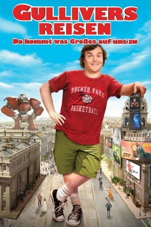

gesehen am 04.03.2016
gesehen am 04.03.2016Alternativ: Gulliver's Travels gesehen am 04.03.2016
 
 IMDB-Wertung: 4.9 / 10
IMDB-Wertung: 4.9 / 10  Metascore:
Metascore: 
Gulliver ist ein Loser! Schon seit Jahren ist er Single und versauert in der Poststelle eines renommierten Reiseverlags, träumt aber eigentlich von der großen Karriere - und Liebe! Eines Tages hilft der vorlaute, wenn auch sympathische Gulliver seinem Glück mithilfe eines gefälschten Reiseberichtes nach und darf sein großes Abenteuer zum Bermudadreieck antreten, um einen Bericht darüber zu verfassen. Nach einer chaotischen Reise strandet Gulliver stattdessen auf der geheimnisvollen Insel Liliput, dessen Einwohner winzig sind und den fremden Riesen zunächst gefangen nehmen. Gulliver kann sie aber durch fantastische und irrwitzige Lügengeschichten für sich und seinen coolen New Yorker Lebensstil begeistern. Zusammen mit den Winzlingen erlebt er lustige und große Herausforderungen, die ihn sogar zum Helden machen. Am Ende lernt der große Gulliver von den ganz Kleinen, dass wahre Größe von innen kommt…
Jahr: 2010
Dauer: 84 Minuten
FSK: 6
Land: USA Studio: 20th Century FoxTonspuren:
Untertitel: Deutsch,
Auflösung: 720p (1280x544) Größe: 3358 MB
Genre: Komödie, Abenteuer, Fantasy, Familie
Regisseur: Rob Letterman
Drehbuch: Joe Stillman, Nicholas Stoller, Jonathan Swift
Soundtrack: Henry Jackman
Darsteller:
 Jack Black als Lemuel Gulliver
Jack Black als Lemuel Gulliver Jason Segel als Horatio
Jason Segel als Horatio Emily Blunt als Princess Mary
Emily Blunt als Princess Mary Amanda Peet als Darcy Silverman
Amanda Peet als Darcy Silverman Billy Connolly als King Theodore
Billy Connolly als King Theodore Chris O'Dowd als General Edward
Chris O'Dowd als General Edward T.J. Miller als Dan
T.J. Miller als Dan James Corden als Jinks
James Corden als Jinks Catherine Tate als Queen Isabelle
Catherine Tate als Queen Isabelle Richard Laing als Nigel Travel Writer
Richard Laing als Nigel Travel Writer David Sterne als Foreman
David Sterne als Foreman Stewart Scudamore als Blefuscian Captain
Stewart Scudamore als Blefuscian Captain Jonathan Aris als Lilliputian Scientist
Jonathan Aris als Lilliputian Scientist Ian Porter als Business Desk Editor
Ian Porter als Business Desk Editor Stink Fisher als Construction Worker
Stink Fisher als Construction Worker Bentley Kalu als New York Tribune Staffer
Bentley Kalu als New York Tribune Staffer Joe Lo Truglio als Butt-crack Man
Joe Lo Truglio als Butt-crack Man Dale Mercer als Dancer
Dale Mercer als Dancer Greg Bennett als Blefuscian Soldier , uncredited
Greg Bennett als Blefuscian Soldier , uncredited Bern Collaco als Dancer / Lilliputian Army Soldier , uncredited
Bern Collaco als Dancer / Lilliputian Army Soldier , uncredited Lubella Gauna als Girl #1 , uncredited
Lubella Gauna als Girl #1 , uncredited Forbes KB als Lilliputian Fisherman , uncredited
Forbes KB als Lilliputian Fisherman , uncredited Romany Malco als Hank , uncredited
Romany Malco als Hank , uncreditedDatei: X:\2010(G-M)\Gullivers Reisen - Da kommt was Großes auf uns zu (2010, FSK6, 1280x544).mkv seit 03.03.2016
Festplatte: HD 2010(G-Z)-2011(A-F)
 Es gibt insgesamt 85 Filme in der Gruppe '2010(G-M)'
Es gibt insgesamt 85 Filme in der Gruppe '2010(G-M)'